-
IPlanning and design of ecological environment
生态环境规划设计规划内容
● 城市环境总体规划
● 流域（区域）生态环境综合规划
● 生态市（县）建设规划
● 城乡总体规划生态环境保护规划专题
特色与优势
● 充分依托3S（GIS、RS、GPS）平台开展生态环境空间布局及其优化研究
● 基于ADMS、CALPUFF、水动力学模型、多维水质模型等实现环境质量模拟与预测
● 围绕生态环境保护、资源合理开发利用与城镇产业发展协调发展的技术路线，形成了一套较为完备的技术和数据支撑体系
经典案例
-
内蒙古自治区呼包鄂城镇群规划生态保护专题
针对呼包鄂城市群生态本底脆弱、资源开发环境风险突出、城镇化发展迅猛等特征和问题，提出生态环境保护的目标和治理策略。
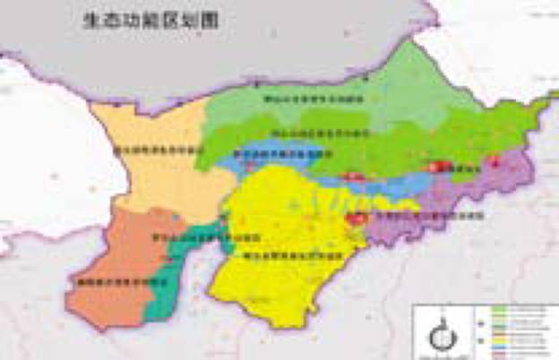 -
顺义新城生态环境专题研究
规划明确了新城发展的资源、生态环境优势和制约条件，以建设资源节约型和生态保护型城市为目标，提出了科学规划保障新城可持续发展的生态环境建设和保护策略与方案。保障顺义新城在首都重要转折点和战略机遇期内城市经济、社会与人的全面协调和可持续发展。
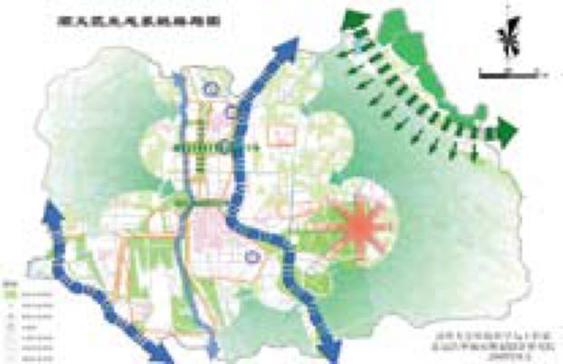
其他成功案例
● 大连生态市建设规划
● 绍兴市“十二五”总量控制规划
● 天津生态市“十二五”建设规划
● 汾河流域（灵石段）生态环境整治总体规划
······
Environmental impact assessment
规划环境影响评价评价内容
● 区域战略环境评价
● 城市总体规划环境影响评价
● 园区规划环境影响评价
特色与优势
● 基于生态空间保护优先的原则，确定合理的城镇和产业发展空间和规模约束
● 专业的系统动力学和土地利用、能源、大气、地表水、海洋环境模型分析，预测评估规划的环境影响及风险，评估规划方案的环境合理性和可行性，提出规划调整建议和合理的环境影响减缓措施和对策
经典案例
-
三亚市城市总体规划环境影响评价
在综合分析三亚城市发展定位、回顾评价城市发展历程和资源生态环境现状的基础上，以生态空间约束和资源承载力作为城市发展的支撑条件，系统预测和评价了三亚城市规划对水、生态和能源交通系统的环境影响，并从协调城市发展和环境保护的角度提出了规划实施建议和环境保护对策。
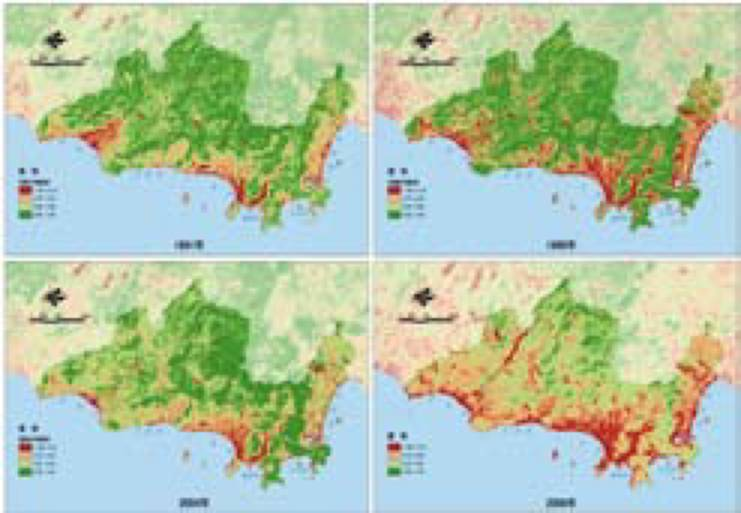 -
浙江舟山群岛新区发展规划环境影响评价
从生态保护空间、资源环境承载力、生态环境影响和海洋风险模拟四方面分析预测，提出了包括“四位一体”环境管理策略和差别化总量控制方案等规划实施建议和环境保护对策。
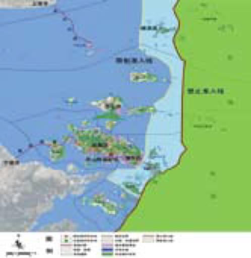
其他成功案例
● 德阳市“5.12”地震灾后重建规划环境影响评价
● 三亚城市总体规划环境影响评价
● 大连市城市发展规划环境影响评价
● 宝日希勒矿区总体规划环境影响评价
······
Planning of low carbon & circular economy
低碳与循环经济规划规划内容
● 循环经济示范城市创建方案
● 低碳发展战略研究
● 生态环保技术集成
特色与优势
● 在环境保护、能源利用、城市规划等领域的技术经验
● 依托清华大学环境学院科研力量
● 显著提高了合作城市的资源能源利用效率，改善人居环境质量，完善了低碳基础设施建设
经典案例
-
北京生态城·夏各庄生态建设导则
以夏各庄生态基础、发展目标和生态城市理念为指引，创建夏各庄生态城市总体发展目标和指标体系。通多层次技术支撑，降低城镇发展中对生态环境的不利影响，避免传统发展模式带来的城市问题，创造独具特色的生态型城市新区。
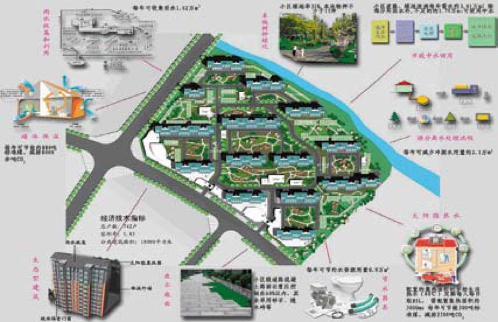 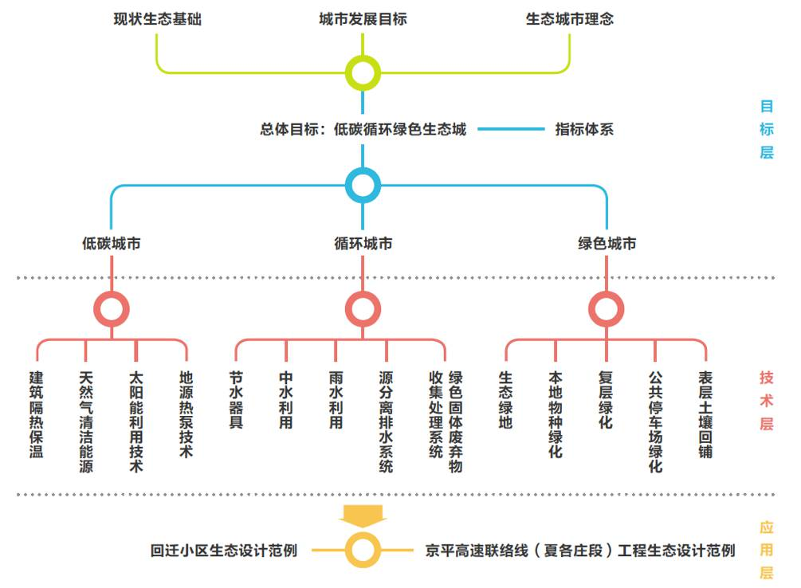 -
苏州市创建国家循环经济示范城市实施方案
基于苏州市现状的分析、未来社会发展情景的预测，确立苏州市创建循环经济的发展模式。以循环型产业发展体系为基础，构建苏州市循环经济四大体系：静脉产业集群为核心的全社会资源循环利用体系、节能降耗为核心的资源能源绿色高效利用体系、优化生态环境支撑为核心的城镇人居环境体系、以绿色消费为核心的循环文化社会体系。
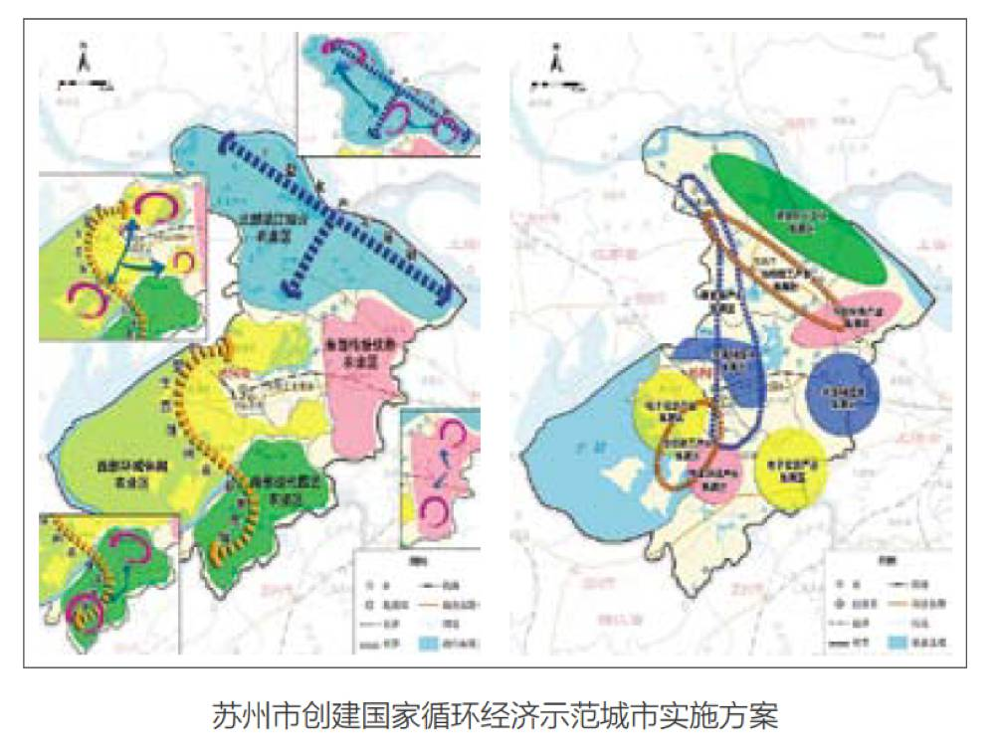
其他成功案例
● 新泰市创建国家循环经济示范城市实施方案
● 北京金融街生态环保技术集成
● 山东省低碳发展战略研究
······
Planning and design of water system
水系统规划设计规划内容
● 流域水环境综合规划
● 湿地资源保护规划与工程设计
● 水质模拟与水环境整治规划
● 污水厂与人工湿地工程设计
特色与优势
● 参与了大量国家及省市重点工程项目，包括“三湖三河”治理
● 技术实力处于国内领先水平
经典案例
-
滇池外海湖滨生态建设工程初步设计
滇池外海湖滨生态建设工程区位于滇池外海最低运行水位1885.5m等高线至规划环湖路之间的湖滨区域，工程建设总面积49880亩。工程通过湖滨湿地与生态林的建设与恢复，构建了从水生到陆生完整的湖滨生态带，形成控制入湖污染负荷的有力屏障。
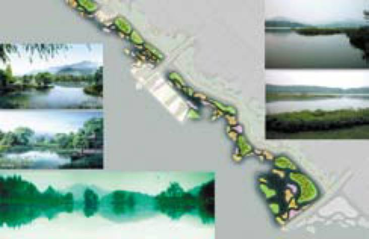 -
莲花湖水质保障研究及人工湿地工程设计
本项目根据铁岭新城水系的规划情况，模拟不同水质维护情景下莲花湖水系的水质变化，提出水系水质维护建议，并在此基础上完成莲花湖人工湿地水质净化工程方案设计、初步设计和施工图设计。
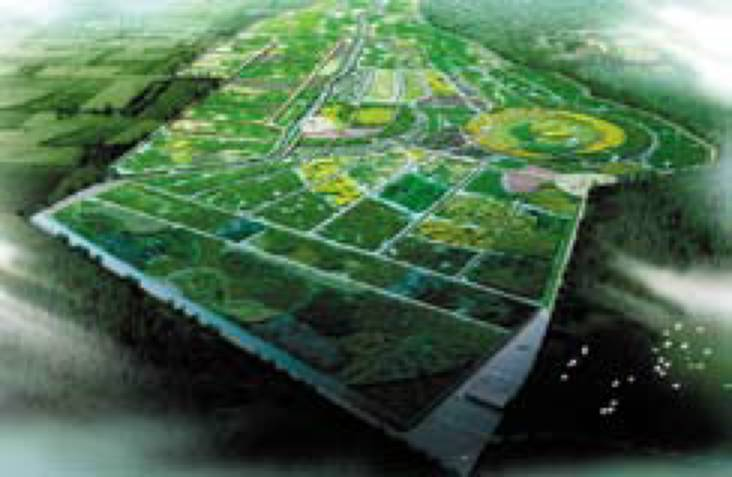
其他成功案例
● 奥林匹克森林公园水系水质模拟与水系设计
● 德阳市湿地资源保护规划
● 长潭水库保护与利用规划
● 北京汉石桥湿地专项规划
······
服务内容

经典案例
-
国帧水务信息化系统建设项目可行性研究
合作单位：安徽国祯环保节能科技股份有限公司
项目时间：2011年
项目内容：本可行性研究首先对国内外现状及公司现有的软硬件系统现状进行详细的调研与分析，然后进行软硬件系统方案设计、制定项目实施计划、确定项目组织与培训计划、分析项目风险，从而形成完整的污水厂物联网系统解决方案。
-
滇池水务信息系统规划咨询
合作单位：滇池水务股份有限公司
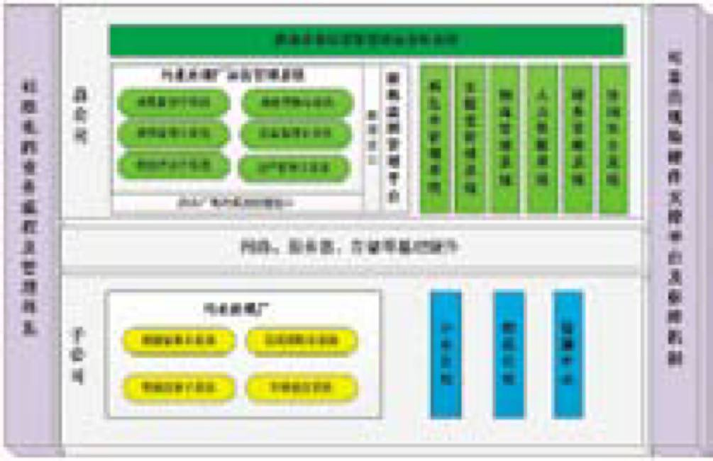
项目时间：2014年
项目内容：本规划通过对滇池投资公司总部及各污水厂现有软硬件系统进行调研分析，在对国内外相关技术现状综合分析的基础上，提出智慧水务信息系统软硬件平台建设方案，并制定示范污水厂无人值守管理模式实施方案。
Software development
管理软件定制开发将先进的信息化技术与污水厂运营管理实际需求紧密结合，提供标准化、专业化、可扩展的污水处理厂站应用管理软件定制化开发服务，提升水务企业科学决策能力和运营管理水平。
服务内容
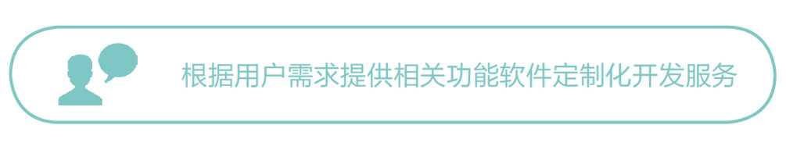经典案例
-
国祯环保水务运营管理物联网系统
合作单位：安徽国祯环保节能科技股份有限公司
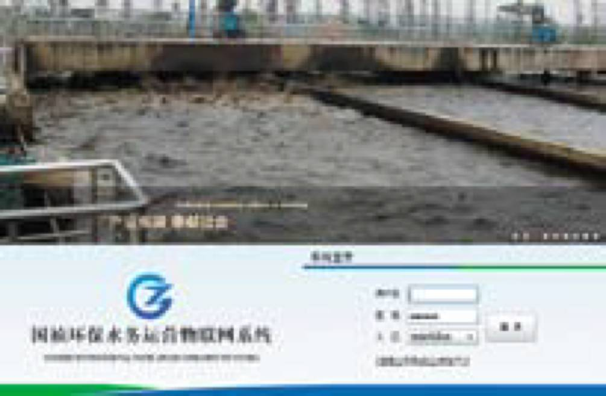
项目时间：2011- 2013年
项目内容：系统实现对国祯环保集团下辖42座污水处理厂的信息化与智能化管理，具有包括远程监控、生产管理、设备管理、文库管理、技术支持、专家诊断等功能子系统，有效提高国祯环保集团污水厂运营管理水平，为管理者提供决策支持。 -
城市污水处理系统运行绩效管理系统
合作单位：国家水体污染控制与治理科技重大专项子课题
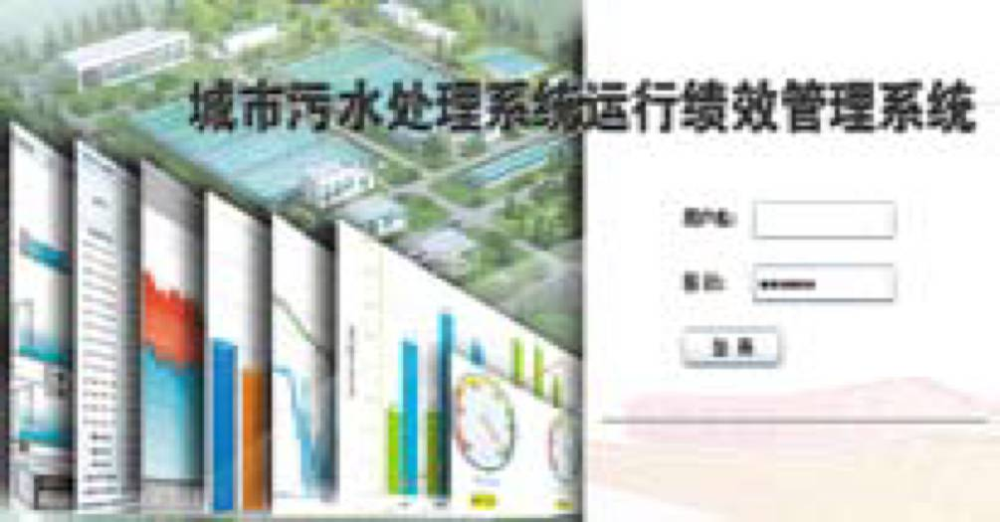
项目时间：2011- 2013年
项目内容：系统实现行业—企业—污水厂三级运行绩效评估，支持评估指标“自下而上”计算，“自上而下”分解的查看模式，提供直观、丰富的图表展示，具有数据采集、评估计算、结果展示、系统配置等功能。
Energy-saving control
节能降耗控制工程针对现阶段我国污水厂普遍存在控制管理水平低、物耗能耗水平高等问题，提供污水厂全流程节能降耗控制工程解决方案，特别针对重点能耗单元实施智能控制改造，保持污水厂工艺稳定，降低运行能耗，节约运营成本。
服务内容
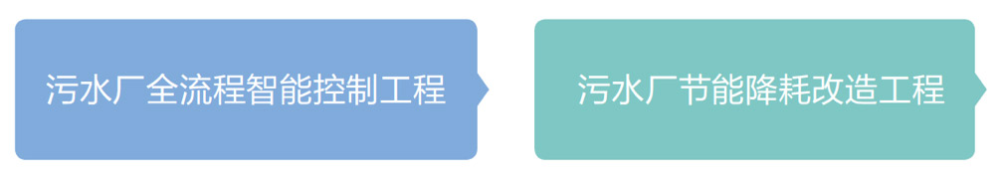经典案例
-
北京小红门污水处理厂节能降耗示范工程
合作单位：北京城市排水集团有限责任公司
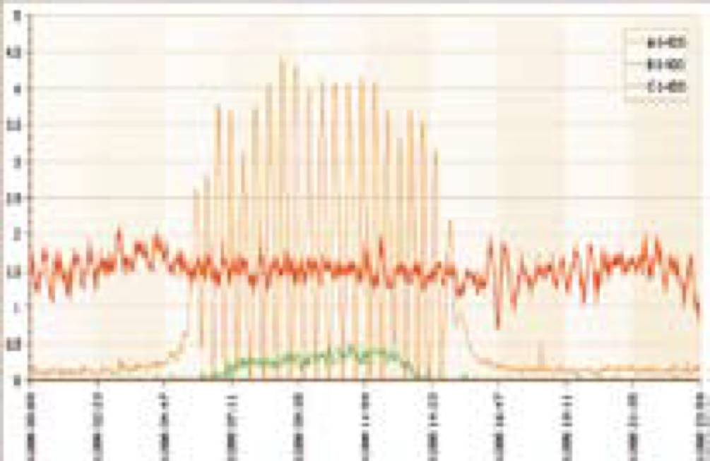
项目时间：2008- 2010年
项目内容：北京小红门污水处理厂采用AAO处理工艺，日处理能力60万吨。本项目以污水处理厂智能控制系统为实施载体，进行全流程节能降耗技术集成。系统实施后“DO反馈”常见的震荡、低限等问题得到彻底改善，溶解氧浓度基本控制在设定值±0.3mg/L。 -
安庆首创污水处理厂节能降耗智能控制工程
合作单位：安庆首创水务有限责任公司
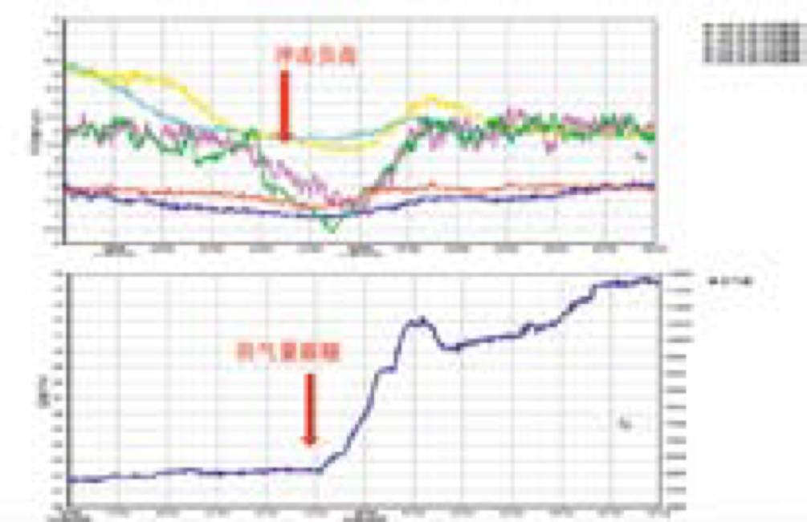
项目时间：2009年
项目内容：安庆市城东污水处理厂采用AAO处理工艺，一期处理能力12万吨/日。本工程主要对进水泵站单元和鼓风曝气单元进行改造与智能控制系统实施，系统实施后，提高了污水厂运行的稳定性，并降低运行能耗，实现全厂节电10.8%，当水质水量进一步增大及二期扩建后，节能比例将达到15- 20%。
Water management cloud
水务管理云服务水务管理云服务基于互联网与云计算技术，通过在云平台运行集中式水务运营管理系统，建立完善的水务运营数据及信息流转的标准化 管理体系和信息共享机制，打造水务运营的创新型管理模式。
服务内容
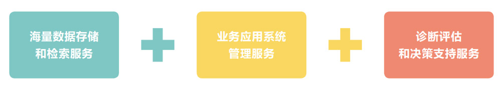特色与优势
● 高性价比，用户无需建设与维护成本
● 检索计算快速高效，信息共享无障碍
● 海量数据永久存储、永久在线
● 应用服务持续更新，无间断维护，满足用户需求
● 云安全策略、分用户存储、数据保密等保障机制，保证数据安全
经典案例
-
昆明第七污水处理厂巡检管理云服务平台
合作单位：滇池水务股份有限公司 项目时间：2013- 2014年 项目内容：借助移动互联网技术，通过简单易操作的触控手机实现生产巡检全过程、精细化、数字化的管理，建立现代化的污水厂生产巡检系统。巡检管理云服务平台为昆明第七污水厂提供包括巡检计划管理、巡检项配置管理、巡检人员排班管理、巡检信息填报、巡检信息统计与查询等系统功能，实现对厂内生产与设备的精细化巡检管理。
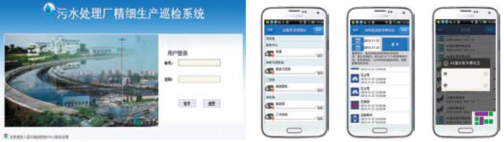
WWTP centralized managementcloud
污水厂集团化运营管理解决方案针对目前我国大型水务公司或政府部门需要同时监管多个污水厂运营的需求，构建污水厂多厂集中监控与管理模式，建立厂级与总部中心级两层管理体系，在厂级终端主要实现数据的收集反馈，生产调度命令和设备运维任务的执行；在总部中心实现对多厂生产与设备的监管统筹与绩效考评，并可由技术专家为多个污水厂生产运行做指导，通过多种高级管理决策技术，解决污水厂多厂运营管理的标准化、集约化问题。
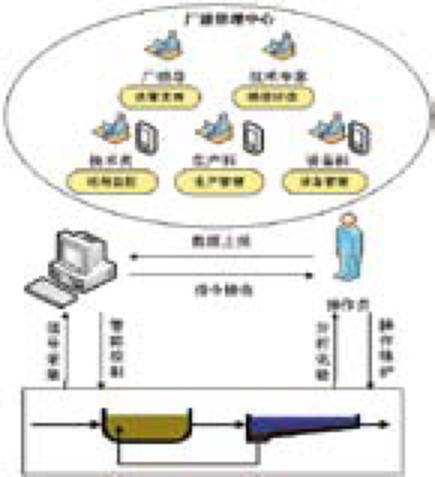WWTP refined management
污水厂精细化管理解决方案针对目前我国污水厂运营仍采用粗放式管理，业务流程管控能力薄弱，业务信息分散且缺少有效利用，管理效率低下，运营成本高等问题，提出构建精细化污水厂管控模式，将污水厂运营管理业务流程与信息流程标准化，建立工单式管理模式实施流程控制，实现生产与设备信息有机管理，打造全方位、精细化污水厂管理模式。
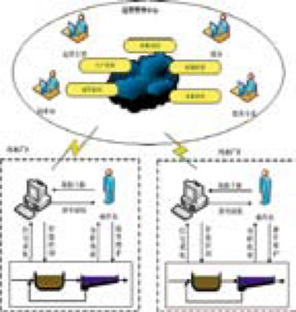WWTP unmanned control
污水厂无人值守解决方案针对现阶段国内污水厂运行仍依靠操作人员经验进行粗放式调控，控制的精准度低，时效性弱，且对人力依赖严重，造成污水厂运行成本高等问题，在污水厂重点处理单元乃至全流程实施智能控制，根据进水负荷及运行工况自动执行参数调节，优化运行条件，降低物能消耗，同时发挥区域化集中管理的优势，采用统一巡检、集中维修的管理方式，逐步建立“无人值守”的污水厂智能化运行管理模式。
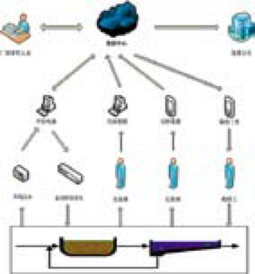WUnmanned control pump station
污水泵站无人值守解决方案针对我国现阶段城镇雨污水泵站运行控制水平低、运营管理成本高等问题，构建泵站无人值守和集中监控与调度的管控模式，建立统一标准化设备管控与信息化流程，采用多级泵站联合调度管理，优化泵站运行条件，通过报警联动快速应对设备故障，自动切换控制策略，保障泵站安全、稳定运行。